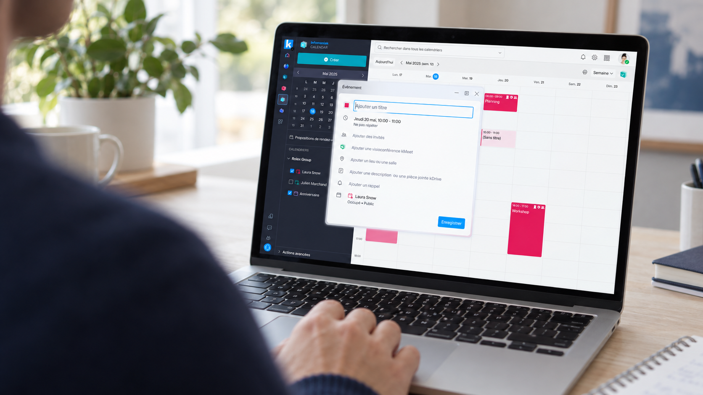
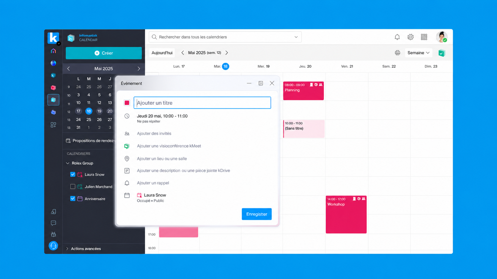
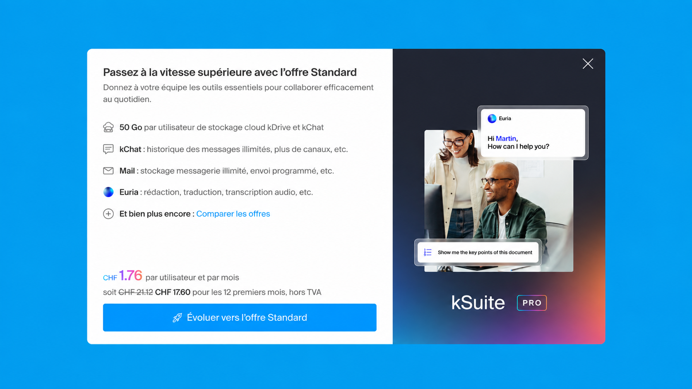

1. Infomaniak
Design produit des interfaces Calendar et kSuite
En poste
Chez Infomaniak, j’interviens en tant que Product Designer (UX/UI) sur les interfaces des outils collaboratifs. Cette sélection présente Calendar et kSuite, à travers la création d’événements et la présentation des offres.
Les écrans mettent en évidence l’organisation de l’agenda, les options associées aux rendez-vous et la mise en avant des fonctionnalités de la suite.
Les écrans mettent en évidence l’organisation de l’agenda, les options associées aux rendez-vous et la mise en avant des fonctionnalités de la suite.

